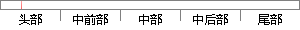

直观上，这个研究可以保证甚至提高电信企业的利润。
片段位置图

相似结果|
相似片段 1：企业不惜牺牲短期利润，提高服务质量进入高端市场，或是降价（把原本提供给高端市场的电信服务质量提供给低端客户）以开发低端市场。但这个策略不能改变市场的格局，因为低平均客户成本电信企业可以采取同样的办法与之
|
※ 片段修改建议 ※
近似词参考：- 研究：钻研
- 保证：包管
- 甚至：乃至
- 提高：进步
系统自动生成语句：直观上，这个钻研可以包管乃至进步电信企业的利润。
注：本片段修改建议为系统自动生成，仅供参考。